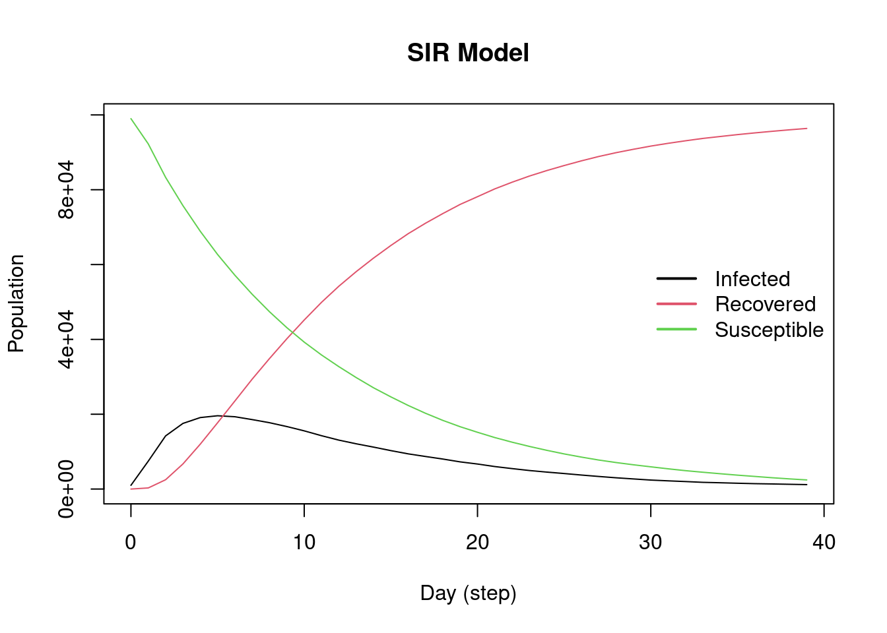
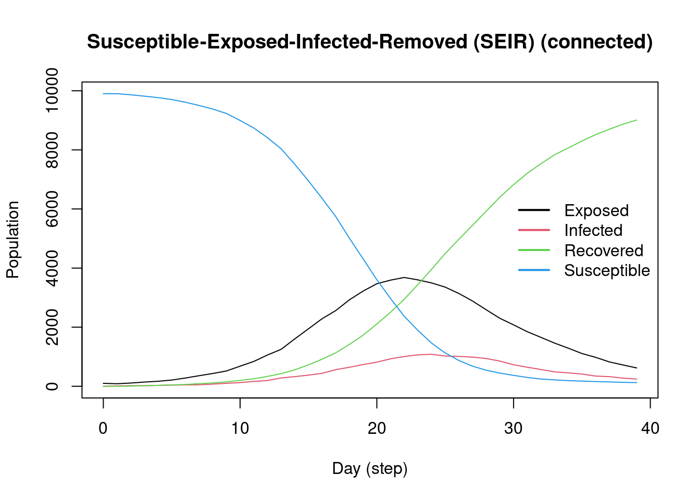
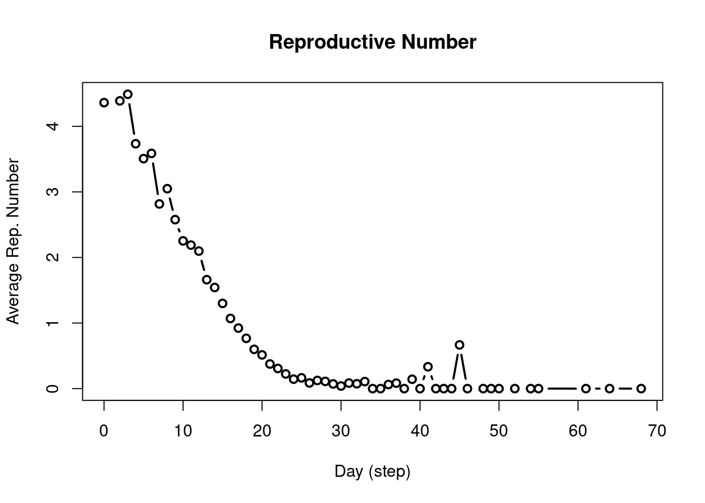
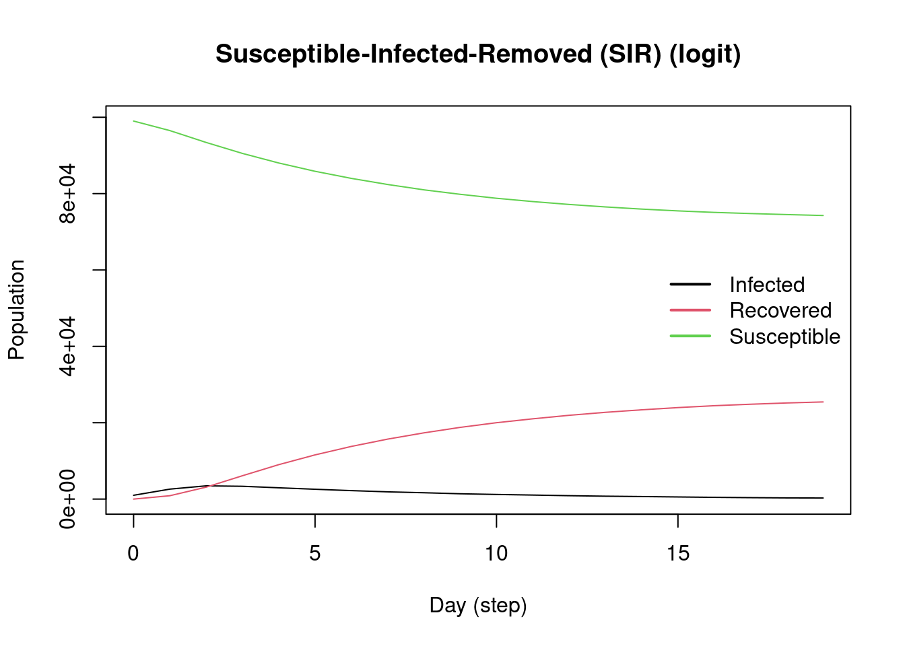
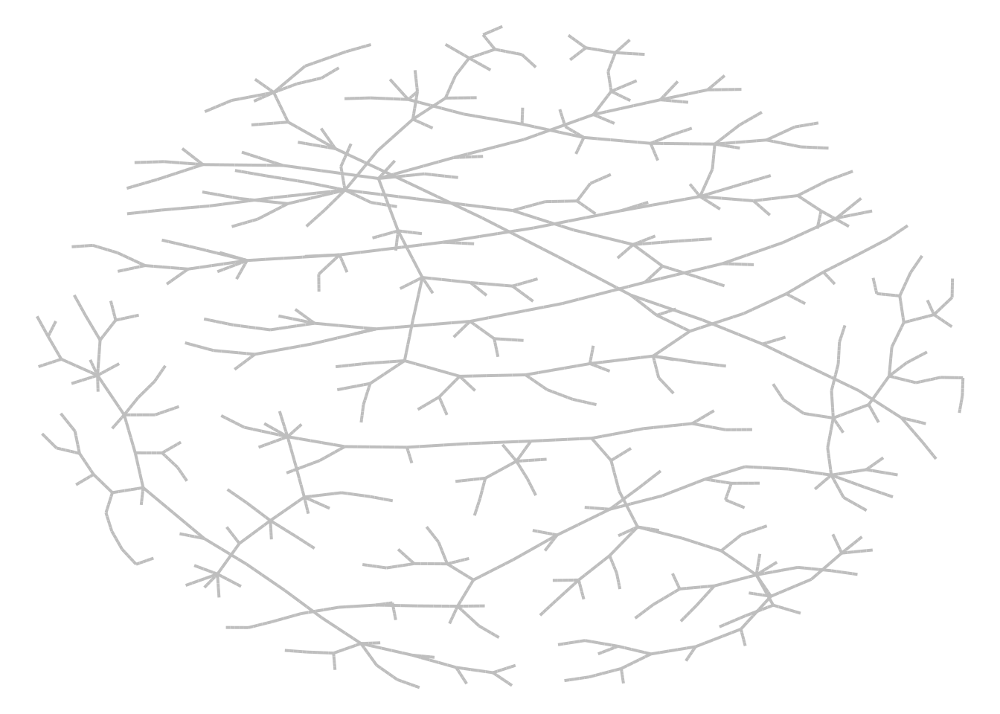
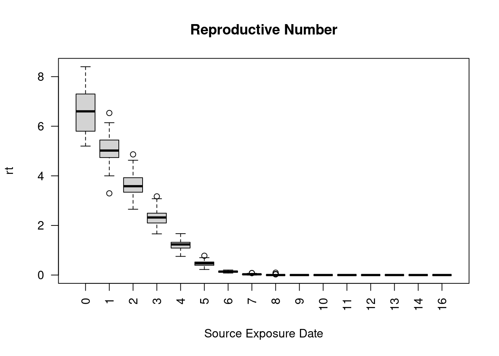

# install.packages("devtools")
devtools::install_github("UofUEpi/epiworldR")epiworldR
This R package is a wrapper of the C++ library [epiworld](https://github.com/UofUEpi/epiworld). It provides a general framework for modeling disease transmission using agent-based models ([wiki](https://en.wikipedia.org/w/index.php?title=Agent-based_model&oldid=1153634802)). Some of the main features include: - Fast simulation with an average of 30 million agents/day per second. - One model can include multiple diseases. - Policies (tools) can be multiple and user-defined.
Installation
You can install the development version of epiworldR from [GitHub](https://github.com/) with:
Examples
This R package includes several popular epidemiological models including SIS (wiki), SIR (wiki), and SEIR (wiki) using either a fully connected graph (similar to a compartmental model) or a user-defined network. Here are some examples:
SIR Model Using a Random Graph
This Susceptible-Infected-Recovered model features a population of 100,000 agents simulated in a small-world network. Each agent is connected to ten other agents. One percent of the population has the virus, with a 70% chance of tranmission. Infected individuals recover at a 0.3 rate:
library(epiworldR)
# Creating a SIR model
sir <- ModelSIR(
name = "COVID-19",
prevalence = .01,
infectiousness = .7,
recovery = .3
) |>
# Adding a Small world population
agents_smallworld(n = 100000, k = 10, d = FALSE, p = .01) |>
# Running the model for 50 days
run(ndays = 50, seed = 1912)_________________________________________________________________________
|Running the model...
|||||||||||||||||||||||||||||||||||||||||||||||||||||||||||||||||||||||| done.
| done.sir
________________________________________________________________________________
SIMULATION STUDY
Name of the model : Susceptible-Infected-Recovered (SIR)
Population size : 100000
Number of entities : 0
Days (duration) : 50 (of 50)
Number of variants : 1
Last run elapsed t : 330.00ms
Last run speed : 15.12 million agents x day / second
Rewiring : off
Global actions:
(none)
Virus(es):
- COVID-19 (baseline prevalence: 1.00%)
Tool(s):
(none)
Model parameters:
- Infectiousness : 0.7000
- Prob. of Recovery : 0.3000
Distribution of the population at time 50:
- (0) Susceptible : 99000 -> 822
- (1) Infected : 1000 -> 415
- (2) Recovered : 0 -> 98763
Transition Probabilities:
- Susceptible 0.91 0.09 0.00
- Infected 0.00 0.70 0.30
- Recovered 0.00 0.00 1.00Visualizing the outputs
plot(sir)
SEIR Model With a Fully Connected Graph
model_seirconn <- ModelSEIRCONN(
name = "COVID-19",
prevalence = 0.01,
n = 10000,
contact_rate = 4,
incubation_days = 7,
prob_transmission = 0.6,
prob_recovery = 0.5
)
set.seed(132)
run(model_seirconn, ndays = 100)_________________________________________________________________________
Running the model...
||||||||||||||||||||||||||||||||||||||||||||||||||||||||||||||||||||||||| done.
done.model_seirconn
________________________________________________________________________________
SIMULATION STUDY
Name of the model : Susceptible-Exposed-Infected-Removed (SEIR) (connected)
Population size : 10000
Number of entities : 0
Days (duration) : 100 (of 100)
Number of variants : 1
Last run elapsed t : 119.00ms
Last run speed : 8.39 million agents x day / second
Rewiring : off
Global actions:
(none)
Virus(es):
- COVID-19 (baseline prevalence: 1.00%)
Tool(s):
(none)
Model parameters:
- Avg. Incubation days : 7.0000
- Contact rate : 4.0000
- Prob. Recovery : 0.5000
- Prob. Transmission : 0.6000
Distribution of the population at time 100:
- (0) Susceptible : 9900 -> 91
- (1) Exposed : 100 -> 0
- (2) Infected : 0 -> 0
- (3) Recovered : 0 -> 9909
Transition Probabilities:
- Susceptible 0.96 0.04 0.00 0.00
- Exposed 0.00 0.85 0.15 0.00
- Infected 0.00 0.00 0.49 0.51
- Recovered 0.00 0.00 0.00 1.00Computing some key statistics: plotting and reproductive number (wiki)
plot(model_seirconn)
repnum <- get_reproductive_number(model_seirconn)
plot(repnum, type = "b")
SIR Logit
set.seed(2223)
n <- 100000
X <- cbind(
Intercept = 1,
Female = sample.int(2, n, replace = TRUE) - 1
)
coef_infect <- c(.1, -2, 2)
coef_recover <- rnorm(2)
model_logit <- ModelSIRLogit(
"covid2",
data = X,
coefs_infect = coef_infect,
coefs_recover = coef_recover,
coef_infect_cols = 1L:ncol(X),
coef_recover_cols = 1L:ncol(X),
prob_infection = .8,
prob_recovery = .3,
prevalence = .01
)
agents_smallworld(model_logit, n, 8, FALSE, .01)
run(model_logit, 50)_________________________________________________________________________
|Running the model...
|||||||||||||||||||||||||||||||||||||||||||||||||||||||||||||||||||||||| done.
| done.plot(model_logit)
# Females are supposed to be more likely to become infected
rn <- get_reproductive_number(model_logit)
(table(
X[, "Female"],
(1:n %in% rn$source)
) |> prop.table())[,2] 0 1
0.12984 0.14201 # Looking into the agents
get_agents(model_logit)Agents from the model "Susceptible-Infected-Removed (SIR) (logit)":
Agent: 0, state: Recovered (2), Nvirus: 0, NTools: 0, NNeigh: 8
Agent: 1, state: Recovered (2), Nvirus: 0, NTools: 0, NNeigh: 8
Agent: 2, state: Recovered (2), Nvirus: 0, NTools: 0, NNeigh: 8
Agent: 3, state: Recovered (2), Nvirus: 0, NTools: 0, NNeigh: 8
Agent: 4, state: Recovered (2), Nvirus: 0, NTools: 0, NNeigh: 8
Agent: 5, state: Recovered (2), Nvirus: 0, NTools: 0, NNeigh: 8
Agent: 6, state: Recovered (2), Nvirus: 0, NTools: 0, NNeigh: 8
Agent: 7, state: Recovered (2), Nvirus: 0, NTools: 0, NNeigh: 8
Agent: 8, state: Susceptible (0), Nvirus: 0, NTools: 0, NNeigh: 8
Agent: 9, state: Recovered (2), Nvirus: 0, NTools: 0, NNeigh: 8
... 99990 more agents ...Transmission Network
sir <- ModelSIR(
name = "COVID-19",
prevalence = .01,
infectiousness = .5,
recovery = .5
) |>
# Adding a Small world population
agents_smallworld(n = 500, k = 10, d = FALSE, p = .01) |>
# Running the model for 50 days
run(ndays = 50, seed = 1912)_________________________________________________________________________
|Running the model...
|||||||||||||||||||||||||||||||||||||||||||||||||||||||||||||||||||||||| done.
| done.# Transmission network
net <- get_transmissions(sir)
# Plotting
library(netplot)
library(igraph)
Attaching package: 'igraph'The following object is masked from 'package:netplot':
egoThe following objects are masked from 'package:stats':
decompose, spectrumThe following object is masked from 'package:base':
unionx <- graph_from_edgelist(as.matrix(net[,2:3]) + 1)
nplot(x, edge.curvature = 0, edge.color = "gray", skip.vertex=TRUE)
Multiple Simulations
model_sir <- ModelSIRCONN(
name = "COVID-19",
prevalence = 0.01,
n = 1000,
contact_rate = 2,
prob_transmission = 0.9, prob_recovery = 0.1
)
# Generating a saver
saver <- make_saver("total_hist", "reproductive")
# Running and printing
run_multiple(model_sir, ndays = 100, nsims = 50, saver = saver, nthread = 2)Starting multiple runs (50) using 2 thread(s)
_________________________________________________________________________
_________________________________________________________________________
||||||||||||||||||||||||||||||||||||||||||||||||||||||||||||||||||||||||| done.
done.# Retrieving the results
ans <- run_multiple_get_results(model_sir)
head(ans$total_hist) sim_num thread date nvariants state counts
1 1 0 0 1 Susceptible 990
2 1 0 0 1 Infected 10
3 1 0 0 1 Recovered 0
4 1 0 1 1 Susceptible 974
5 1 0 1 1 Infected 25
6 1 0 1 1 Recovered 1head(ans$reproductive) sim_num thread variant source source_exposure_date rt
1 1 0 0 527 10 0
2 1 0 0 835 10 0
3 1 0 0 189 9 0
4 1 0 0 192 9 0
5 1 0 0 612 9 0
6 1 0 0 977 9 0plot(ans$reproductive)